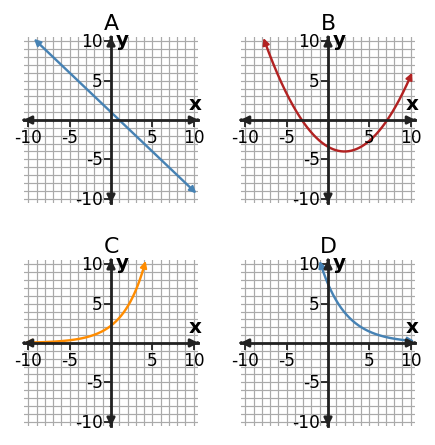

1. Use first differences, second differences, or ratios to classify the table.
| x | y |
|---|---|
| 0 | 1 |
| 1 | 5 |
| 2 | 9 |
| 3 | 13 |
| 4 | 17 |
2. At the single input $x=3$, compare $L(x)=3x+8$, $Q(x)=x^2+1$, and $E(x)=3^x$. Which has the greatest output at this input? Explain why this one-input comparison alone does not prove which family grows fastest in the long run.
3. A table with constant first differences can still be exponential as long as its outputs increase. Critique the claim using function-family evidence.
4. Match the table to the correct family—linear, quadratic, or exponential—and identify the decisive feature.
| x | y |
|---|---|
| 0 | 3 |
| 1 | 4 |
| 2 | 7 |
| 3 | 12 |
| 4 | 19 |
5. Compare $L(x)=2x+5$ and $E(x)=2^x$ for nonnegative integer $x$. Find the first integer input where the exponential output is greater than the linear output. Show enough values to support your answer.
6. A car loses 12% of its value each year. Which function family is the most natural model? Explain using the way the quantity changes.
7. The equation is $y=2(3)^x$. Use both the equation and the table as evidence to classify the function family.
| x | y |
|---|---|
| 0 | 2 |
| 1 | 6 |
| 2 | 18 |
| 3 | 54 |
8. Classify the relationship represented by the table as linear, quadratic, or exponential. Cite the output pattern that supports your choice.
| x | y |
|---|---|
| 0 | 7 |
| 1 | 13 |
| 2 | 19 |
| 3 | 25 |
| 4 | 31 |
9. Classify $y=3 x^{2} + x + 2$ as linear, quadratic, or exponential. State the structural feature that identifies the family.
10. Graphs A, B, C, and D show different function-family behavior. Identify the linear graph, the quadratic graph, and the two exponential graphs. For one choice, explain the graph feature you used.

11. Use first differences, second differences, or ratios to classify the table.
| x | y |
|---|---|
| 0 | 3 |
| 1 | 4 |
| 2 | 7 |
| 3 | 12 |
| 4 | 19 |
12. At the single input $x=4$, compare $L(x)=4x+9$, $Q(x)=x^2+2$, and $E(x)=2^x$. Which has the greatest output at this input? Explain why this one-input comparison alone does not prove which family grows fastest in the long run.
13. Any graph that looks U-shaped must represent a quadratic function. Critique the claim and name stronger evidence for a quadratic relationship.
14. Equation B is $y=3(1.4)^x$. Classify the family and name the representation feature that supports the classification.
15. Compare $L(x)=5x+2$ and $E(x)=3^x$ for nonnegative integer $x$. Find the first integer input where the exponential output is greater than the linear output. Show enough values to support your answer.
16. A ride service charges a starting fee of 5 dollars and then 5 dollars for each mile. Which function family best models total cost versus miles? Explain.
17. The equation is $y=3x+1$. Use both the equation and the table as evidence to classify the function family.
| x | y |
|---|---|
| 0 | 1 |
| 1 | 4 |
| 2 | 7 |
| 3 | 10 |
18. Classify the relationship represented by the table as linear, quadratic, or exponential. Cite the output pattern that supports your choice.
| x | y |
|---|---|
| 0 | 7 |
| 1 | 10 |
| 2 | 15 |
| 3 | 22 |
| 4 | 31 |
19. Choose an efficient method to solve $\displaystyle 3 x^{2} + 4 x - 1=0$, then solve. Briefly justify the method choice.
20. For $\displaystyle x^{2} + x - 20=0$, compare factoring with the quadratic formula. Which is more efficient here, and why? Then solve.
21. Inspect $\displaystyle x^{2} + 10 x + 25=0$. Identify the structural clue that suggests a fast solving method, then solve.
22. For $f(x)=3(x+2)^2-1$ in vertex form, identify the vertex directly from the form.
23. Rewrite $f(x)=x^{2} - x - 12$ in factored form, then use that form to state the zeros.
24. You need to identify the maximum or minimum point of a quadratic model as directly as possible. Which form—standard, vertex, or factored—is the best starting representation, and why?